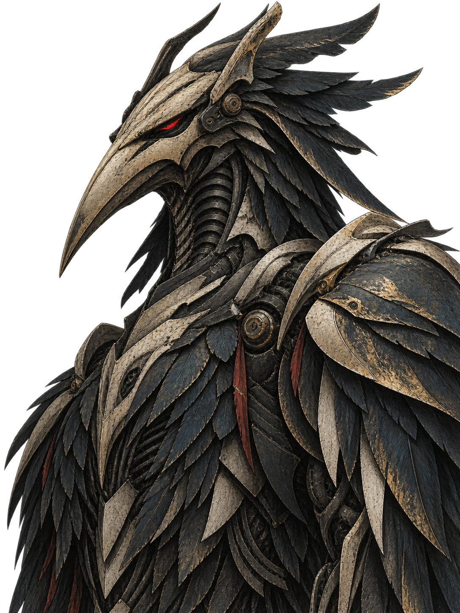
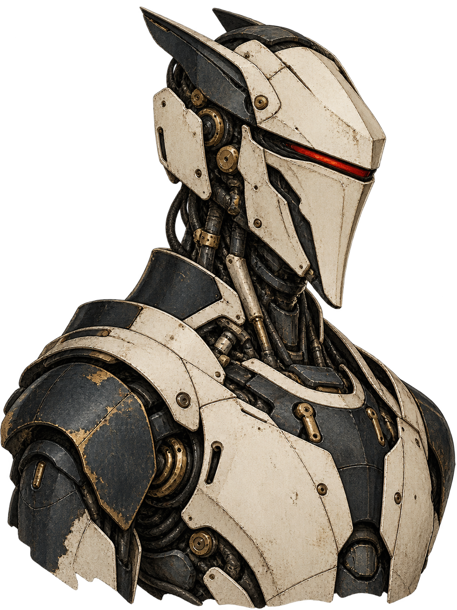

One Client / WARP
Обновить под свою платформу
 TENGU
TENGUeMudhra: как ошибка удостоверяющего центра превращается в задачу для всей инфраструктуры.
8 промежуточных сертификатов
Ключи CA оказались слабыми. Подпись больше не доказывает, кто перед нами.
Cloudflare не обнаружила эксплуатации на своих сервисах. Отчёт от 20.10.2026. Cloudflare · incident reportGoogle · affected keys

Проверка нужна не только между браузером и сайтом.
Пользователь проверяет Cloudflare. Но за этим соединением есть следующее.
20.10 UTC: 02:00 клиенты · 09:15 cloudflared · 19:20 CDN / серверный Zero Trust. По отчёту Cloudflare. Cloudflare · incident reportCloudflare · Full (strict)
Пример доставки исправления: обновили основу, затем заменили работающий экземпляр.
CA / библиотека / образ
Его собственная проверка TLS
Исправление уже доступно. Запущенный экземпляр ещё не изменился.
Иллюстрация, не измеренный тест. Конкретный шаг — reload, restart или redeploy — зависит от программы. Docker · rebuild imagesNode.js · CA configurationcurl · certificate verification
Обновление облачного сервиса не заменяет программу на вашем устройстве.
Обновить под свою платформу
Обновить приложение
Исправление: 2026.10.2
Новый образ → redeploy
Проверьте установленную версию, а не только наличие релиза.
Версии зафиксированы на дату отчёта. Актуальные исправления и платформенные сборки — в источниках. Cloudflare · incident reportcloudflared · 2026.10.2
Две разные настройки. Замена одной не исправляет другую.
Проверить сертификат сервера
Проверить доверенные CA клиентов
На origin нужен действительный сертификат для нужного имени и доверенной цепочки.
Схема показывает направление проверки личности, а не все сообщения TLS-handshake. Cloudflare · Full (strict)Cloudflare · custom mTLS CA
С HTTPS interception меняется место проверки внешнего сервера.
Обычный исходящий HTTPS: приложение использует свой механизм доверия.
Перехват — opt-in. Приложению также нужно доверять CA перехвата; образ и зависимости не перестают требовать обновлений. Cloudflare · HTTPS egress
Обновился верхний слой. Изменилось ли решение о доверии?
Вызов API проходит через зависимости. Решение принимается ниже SDK.
Не отключать проверку сертификата. Демонстрация условная; слайд не выполняет сетевые тесты. Requests · TLS verificationcurl · certificate verificationDennis Jackson · checks
Список CA — начало. Скорость доставки запрета тоже важна.



Firefox доставил блокировку через OneCRL без обновления самого браузера.
Разбор TENGU по отчёту Cloudflare и документации продуктов. Не перевод и не официальная публикация Cloudflare.